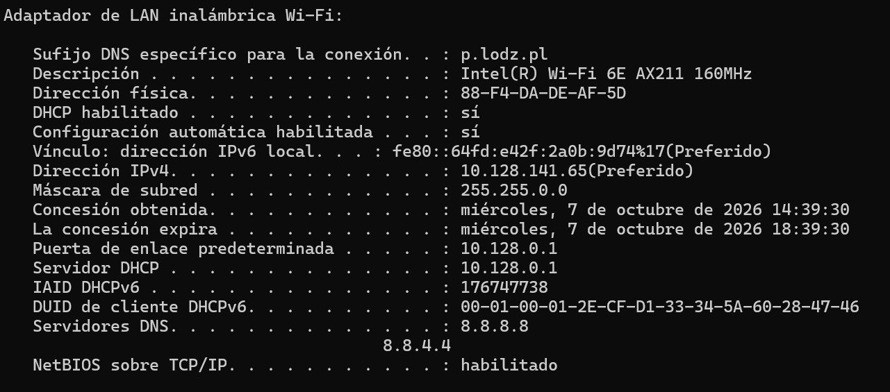
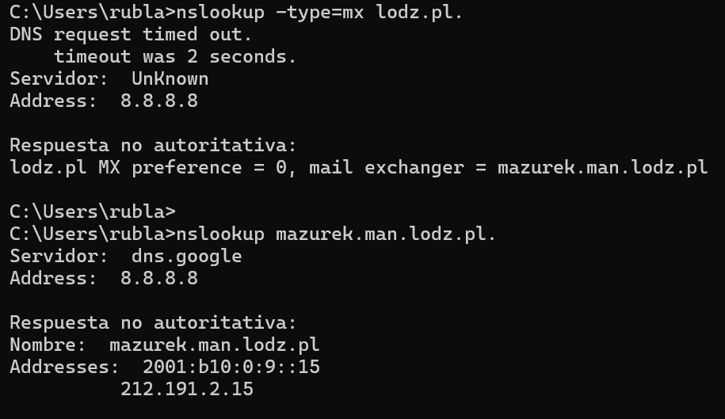
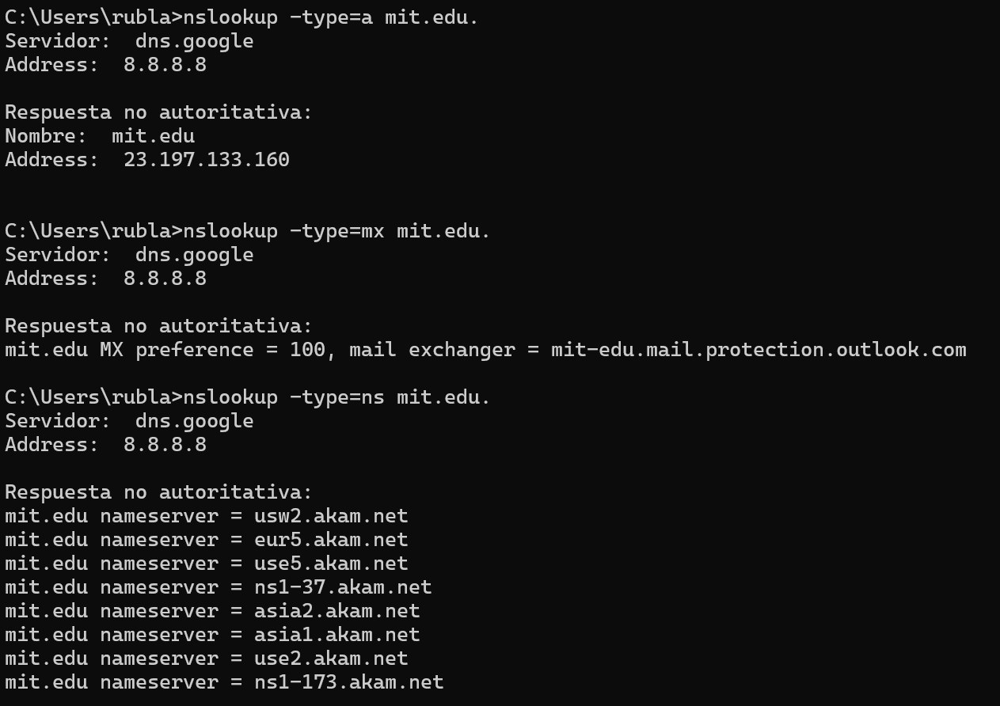
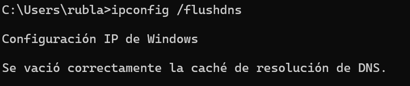
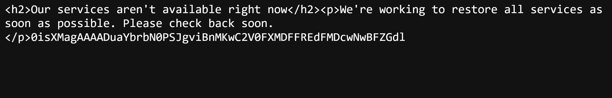
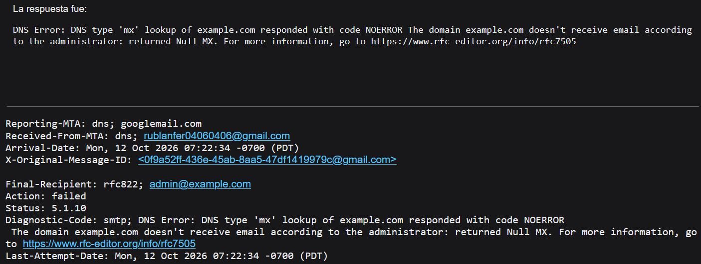

The Domain Name System (DNS) is a distributed naming system that associates domain
names with information such as IP addresses and mail-server destinations. A
top-level-domain (TLD) refers to the last segment of a domain name, or the part that follows
immediately after the ‘dot’ symbol. We can group them into these groups:
| Category | Examples |
|---|---|
| Generic TLDs | .com, .org, .net, .info, .app |
| Country-code TLDs | .pl, .es,. uk |
| Sponsored / restricted TLDs | .edu, .gov |
| Infrastructure TLD | .arpa |
DNS is organized as a distributed hierarchy, usually drawn as an inverted tree. The root is
written as a dot (.). Beneath it are TLDs, followed by registered domains, subdomains and
host names. In www.example.com., the labels are read from right to left: root, com, example,
then www.
1. Root: points resolvers toward the name servers responsible for TLDs.
2. TLD: contains delegation information for domains. In other words they categorize
domains based on purpose, geography, or organization such as .com.
3. Authoritative zone: contains the records for a domain or subdomain.
4. Host name: identifies an individual server or device on the network, (e.g., www)
A DNS client commonly sends a recursive query to a recursive resolver, asking it to resolve
a hostname to an IP address or an error. The resolver may then make iterative queries: a
root server refers it to the relevant TLD servers, the TLD server refers it to the domain's
authoritative servers, and an authoritative server returns the requested record.
DNS delegation is the process by which a parent DNS zone indicates to DNS resolvers that
it has delegated the authority for a DNS subzone (or child zone) to a different set of DNS
servers. This allows the DNS resolvers to locate and query the delegated DNS servers for
the subzone’s DNS records.
A DNS record is a set of instructions stored on authoritative DNS servers that tells the
internet how to handle a specific domain name. They include a name, record type, class,
time-to-live (TTL), and record data.
Forward DNS converts a hostname or web address into an IP address, and reverse DNS
converts an IP address back into a hostname or domain name.
An authoritative answer comes directly from the official source server, that holds the actual
zone files and original DNS records for a domain.
A non-authorative answer may be supplied by a secondary or intermediate server—such
as a recursive resolver, your ISP, or a local cache—that does not own the original domain
records. Instead, it replies using a saved copy (cache) from a previous lookup.
Non-authoritative does not automatically mean incorrect: cached records are normally
usable until their TTL expires, although they can become outdated if caching rules are
violated.
A DNS resolver is the software component that performs DNS lookups for an application or
user. It translates human-readable domain names into numerical IP addresses.
DNS cache temporarily stores answers and their TTLs, reducing latency and repeated
network traffic, mainly used to speed up future lookups.
The /etc/hosts file acts as a static local text file that maps hostnames directly to IP
addresses before any network DNS query happens. It is a local static mapping between IP
addresses and host names that may be checked before DNS according to the system's
name-service configuration.
E-mail uses different protocols for message submission, transfer and retrieval. In the
client-server model, the client initiates a request and the server returns a response.
| Protocol | Purpose | Example commands |
|---|---|---|
| SMTP | Used to send emails from a client to a mail server and to transfer emails between mail servers | EHLO, MAIL FROM, RCPT TO, DATA, QUIT |
| POP3 | Retrieves emails from a mail server and download them to a user's device (the client) | USER, PASS, STAT, LIST, RETR, DELE, QUIT |
| IMAP | Accesses and synchronizes messages and folders stored on the mail server | LOGIN, SELECT, FETCH, STORE, SEARCH, LOGOUT |
With SMTP, a simplified transaction is: the client introduces itself using EHLO, identifies the
envelope sender with MAIL FROM, specifies one or more recipients with RCPT TO, sends
the message after DATA, terminates the data with a line containing a single dot, and ends
the session with QUIT. Servers reply with three-digit status codes such as 250 (success),
354 (start message data), 4xx (temporary failure) or 5xx (permanent failure).
NNTP (Network News Transfer Protocol) is an application-layer internet protocol used to
transport, read, and post Usenet newsgroup articles between servers and client
newsreaders.
A newsreader connects to an NNTP server, selects a newsgroup, retrieves article headers or
bodies, and may post an article if permitted. Unlike SMTP, which transfers e-mail, NNTP is
designed around news articles and newsgroups.
An email address is a unique identifier used to send and receive electronic mail, structured
as username@domain.com. The username is interpreted by the receiving mail system; the
domain identifies the domain responsible for handling mail for that address.
A mailbox is the server-side or client-managed storage area in which messages are kept.
Important mailbox and account parameters may include:
● Incoming server name, protocol (IMAP or POP3), port and encryption method.
● Outgoing SMTP server name, port, authentication method and encryption method.
● Username and authentication requirements.
● Mailbox quota, message-size limits and attachment-size limits.
● Folders, retention rules, forwarding and access permissions.
An e-mail alias is an alternate email address that delivers messages to another mailbox or
group. An alias may be receive-only or may be configured as a permitted sending identity;
that depends on the mail service. An alias is not necessarily a separate mailbox and may not
have its own password or storage.
An Internet e-mail message has a header followed by a body. Header fields are written as a
field name, colon and value. Common fields include From:, To:, Date:, Subject:, Cc: and
Message-ID:. A blank line separates the header from the body. An example could be:
From: maria@example.com
To: ruben@example.net
Subject: Example message
Date: Mon, 12 Oct 2026 10:00:00 +0200
Hello Bob,
This is the body of the message.
The header contains metadata; the body contains the message content. Envelope
information used by SMTP (such as the arguments to MAIL FROM and RCPT TO) is distinct
from the visible message headers.
MIME (Multipurpose Internet Mail Extensions) is an internet standard that expands email
capabilities far beyond basic plain ASCII text. It allows emails to carry rich media,
non-English character sets, HTML formatting, and file attachments.
MIME headers describe the content type and transfer encoding. Common fields include
Content-Type, Content-Transfer-Encoding and Content-Disposition.
A message with multiple parts can use a multipart content type and boundaries to separate
parts.
- Base64 is commonly used to represent binary attachment data as ASCII characters
suitable for transport through systems that historically expected text.
- Quoted-printable is another encoding, often suitable for mostly textual content.
MIME encoding is not encryption: an encoded attachment is not confidential unless
encryption is applied separately.
A mailing list (or email list) is a collection of email addresses grouped together to send the
same message or newsletter to multiple recipients at once. Instead of typing dozens or
hundreds of individual email addresses, a sender transmits the message to a single list
address or through an email marketing platform, which automatically distributes it to every
subscribed
An e-mail gate is a system that relays, filters, scans, routes or translates messages between
mail systems or between e-mail and another messaging environment. Gates can enforce
security policies, filter malware and spam, or connect separate organizations. The exact
function depends on the gateway configuration.
E-mail security is the practice of protecting email accounts, content, and communications
from unauthorized access, loss, or compromise. It uses encryption, authentication, and
protocols to ensure privacy and trust. Key Protocols and concepts:
- SSL (Secure Sockets Layer): An older cryptographic protocol designed to create a
secure, encrypted link between a client and a server. It has been deprecated and
replaced by TLS due to vulnerabilities.
- TLS (Transport Layer Security): The modern successor to SSL that encrypts email
data in transit (as it travels across the network between a client and server or
between mail servers via a secure "handshake"). TLS does not, by itself, guarantee
end-to-end confidentiality across every server that handles a message.
- PGP (Pretty Good Privacy): An encryption program that provides true end-to-end
encryption for emails. Properly configured end-to-end encryption can prevent
intermediate mail servers from reading the protected message content
- Digital Signature: A mathematical technique used to prove the authenticity of the
sender and verify that the message has not been altered in transit. A signature does
not encrypt the body of the email on its own, but it guarantees who sent it and that it
is intact.
- Spam is unwanted bulk messaging (like junk email or scam texts) sent to clutter inboxes,
spread malware, or trick users.
- A blocklist (historically called a blacklist) records IP addresses, domains or other
identifiers with a poor reputation. Mail systems can consult such lists when deciding whether
to accept a message, but false positives are possible.
- Graylists (Greylisting) is an anti-spam technique that temporarily rejects an email from an
unknown sender and sends a retry signal back to the server. Real mail servers will try again
after a few minutes, while automated spam bots usually do not bother to retry.
- Spam Filtering is the automated process of scanning, analyzing, and blocking unwanted
or dangerous emails before they reach your main inbox. It uses rules, content scans,
blacklists, and machine learning (such as Bayesian filters) to tell good mail apart from junk
The DNS settings were modified using the Windows Control Panel to use the DNS 8.8.8.8 , after that, we show it with the comand "ipconfig /all".

Using "nslookup", We queried the NS and MX records of lodz.pl to identify its infrastructure servers and their corresponding IP addresses.

We used "nslookup" to retrieve the IP address, the mail server and the name server records for the University of Oxford.

We queried the A, MX, and NS records for mit.edu to analyze the complete DNS configuration of a domain located outside of Europe.

Using the "ping" command, We verified that the operating system correctly.

The local DNS cache was successfully cleared using the "ipconfig /flushdns" command.

The Windows "hosts" file was successfully modified to map the custom domain ifeKL_1_8.com to the IP address of msn.com. Although Microsoft's servers returned a service error due to a Host header mismatch, the redirection itself was successful, proving the local DNS override worked.

Thunderbird was configured to connect to an existing email, using the IMAP protocol on port 993.

Sending an email to a non-existent domain fails because the DNS resolver cannot find an MX record for the destination.

The server accepted the connection but sent back a message because the requested username does not exist in its database.

Sending an email to a domain not configured for mail services because the administrator indicated thet it does not accept emails.

Using Wireshark, I captured the network traffic generated by Thunderbird while sending and receiving an email, filtering by ports 993 and 465/587.